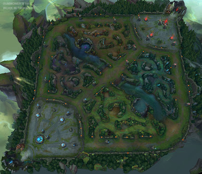
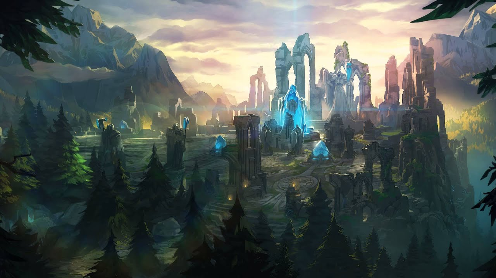
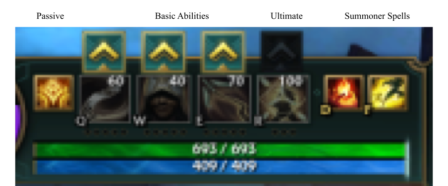
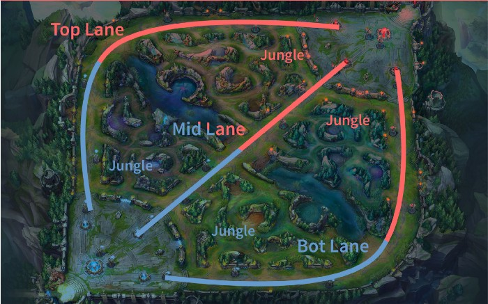

Hello there, welcome to a website about League Of Legends, League of Legends is a fast paced 5v5 MOBA that was first released in 2009. It has over 150 different and unique champions, with 5 distinct roles to choose from. The main game takes place on Summoners Rift, with 3 lanes, and the space in between being filled with a vast jungle, with massive monsters to hunt. Minions run down each lane, providing gold and experience to the champions that defeat them. The goal is to destory the enemy nexus, protected by powerful turrets.
 Here are the basics of how to start playing League of Legends. Before starting the game, players will go into champion select, where they will have the option to choose a champion. Each champion has 3 different basic abilities, 1 ultimate ability, one passive ability, as well as attacks. Champion’s have two main stats. Health, which is how much damage you can take before dying, and Mana, which allows you to cast abilities. Abilities will cost mana most of the time but attacks don’t cost mana and are the main sources of damage for some champions. Champions start the game at level 1, and can upgrade any basic ability. Each level, you can upgrade another basic ability. Once you hit level 6, you can unlock your ultimate ability. This continues until level 18, which is the max level. You can upgrade a basic ability 5 times and ultimate ability 3 times at levels 6, 11, and 16.
Once you get into the game, you will go to your respective lane or jungle and wait for minions to spawn or jungle monsters to spawn. As the laners, you will be killing minions which will give you exp, which allows you to level up, and gold, which allows you to buy items. You can buy items at the shop in your base and these items make your champions more powerful. The jungler will be doing the same but with jungle monsters. The enemy laner will also be trying to get minions, your goal in lane is to get ahead buy either killing the enemy laner, which denies them exp and gold and gives you gold, or use your abilities and attacks to pressure the enemy laner to lose minions. Once you have enough gold for some items, you can recall to teleport back to your base and spend your gold. There are towers in each that deal powerful shots to any enemies that get close, but also give gold once destroyed. To win the game, you must destroy turrets in a lane and make your way to the enemy nexus, which is in the middle of their base. If you can destroy the nexus, the game is over and you have won.
There are 5 roles to choose from in League Of Legends. The Top Lane, filled with powerful melee fighters that have abilites that allow to them to close the distance between you and cut you down quickly. You’ll be taken down fast if you aren’t paying attention. Jungle, where champions defeat monsters for gold and experience and help their team in their lanes. Junglers will attack the opposing team in their lane, pincer attacking the enemy to score a takedown. Then there’s the Mid lane, with it’s large variety of champions. Mages cast spells to defeat enemies, while assassins dominate the lane with attacks and abilities to quickly kill their opponents. The final lane is the Bot lane, the lane of marksmen and long-ranged champions. These champions rely mainly on their auto attacks to put out damage, and while they may be weak early on, they become incredibly powerful once they get items and level up. Lastly, there is Support. These champions also reside in bot lane, and as the name implies they assist their marksmen in many ways. Healing, shielding, engage, etc. All of these are handled by the support. The support is unlike other roles as it doesn’t kill minions for gold, and thus has much less gold than the rest of their team. These 5 roles all have over 30 champions to choose from, so there’s no limits for finding a champion that suits you.
